Ombouw wisselcomplex Aveling deel 8...
- woensdag 10 december 2008 21:07
- Geschreven door Joachim
Zo snel nóg een Aveling-editie? Menig bezoeker zal je voorgegaan zijn met deze gedachte. Aangezien we graag de vorderingen van dag en nacht willen updaten rond de Aveling, kan het wel gebeuren dat we de komende dagen véél Aveling-nieuws hebben. We vragen je hiervoor begrip. Als er ánder belangrijk nieuws is, dan komt dat er uiteraard ook op!
Jawel, het werk op de Aveling gaat dag en nacht door. Van de werkzaamheden van vandaag wederom foto's. Vandaag werden diverse spoordelen afgeleverd. Twee kranen van 500 ton per stuk tilden de oude spoordelen van het talud van de Aveling. Vannacht is er al heel wat spoor verwijderd, op de plek waar binnen enkele dagen een wisselcomplex komt te liggen.
De pendelmetro's tussen Zalmplaat en de Akkers hadden vanmorgen vroeg nog wat startproblemen. Door diverse omstandigheden was het tijdelijk niet mogelijk om te keren op Zalmplaat spoor 1. Hierdoor liepen de pendelmetro's een kleine vertraging op. Door een defecte metro op Tussenwater spoor 20, moest een metro uitwijken naar Tussenwater spoor 10. De metro's van de Erasmuslijn keerden op het keerspoor van Tussenwater, de metro's van de Calandlijn richting Spijkenisse keerden net buiten spoor 20 achter het wisselcomplex, naast het keerspoor van Tussenwater (spoor 2 dus). Dit werd gedaan om te voorkomen dat de ATB anders negatief reageerde en kon zorgen voor vertragingen.
Natuurlijk zijn er weer foto's gemaakt, waarvoor onze hartelijke dank. Bij elke foto een beschrijving.
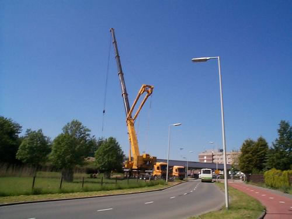
Eén van de kranen van 500 ton die de spoordelen omhoog tillen...
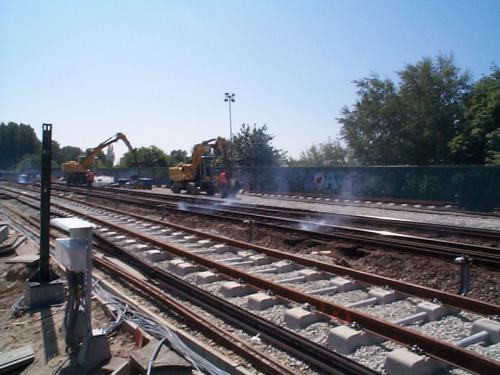
Het echte werk is begonnen, geen metroverkeer meer, de railshovels kunnen hun gang gaan.

Een deel van het spoor is al opgebroken...
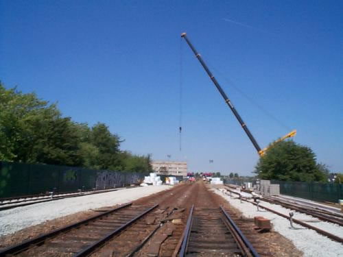
... zoals je hier nogmaals kunt zien. Helemaal rechts het nieuwe spoor...

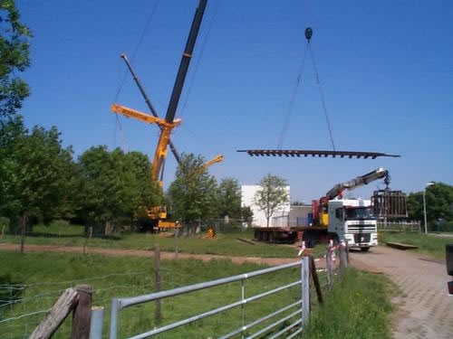
De sporen worden van de vrachtwagen getild met behulp van de kraan...
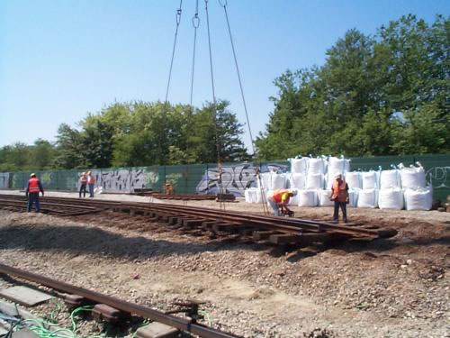
De oude rails wordt verwijderd en met de kranen op de vrachtwagen getild...
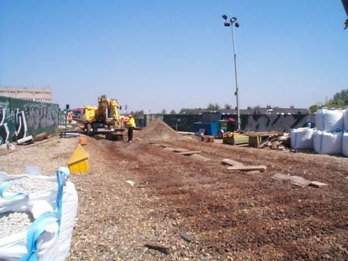
Waar ooit het spoor lag, is goed te zien...
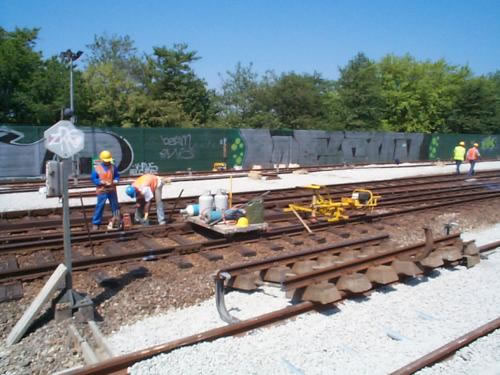
De spoorstaven worden gescheiden van elkaar, daarna worden ze van de Aveling afgehaald. Op de voorgrond een oud stuk spoor...
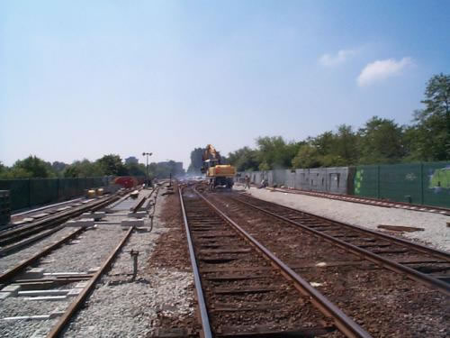

En de pendeldiensten rijden de hele dag heen en weer... Zalmplaat - Hoogvliet - Tussenwater - Hoogvliet - Zalmplaat...
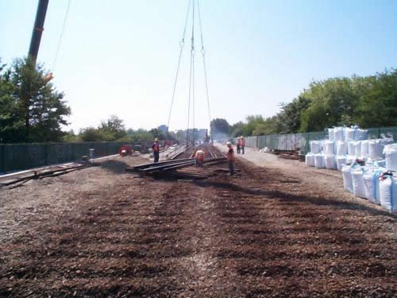
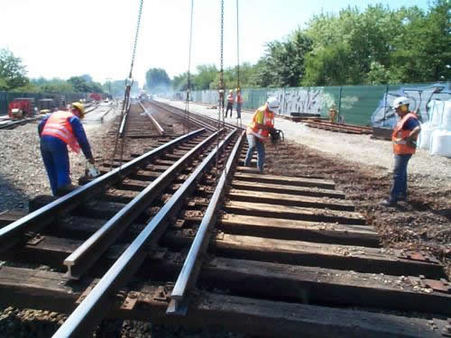
Een deel van het wisselcomplex wordt hier van de baan getild.
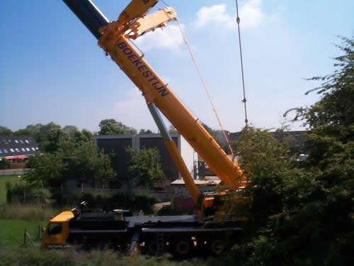
Ja, het zijn niet zomaar de standaard kraantjes... Ze zijn nogal groot, en nogal zwaar, 400 en 500 ton...